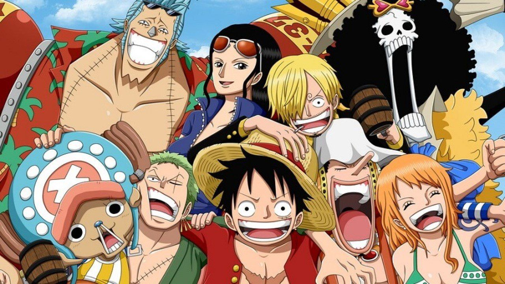
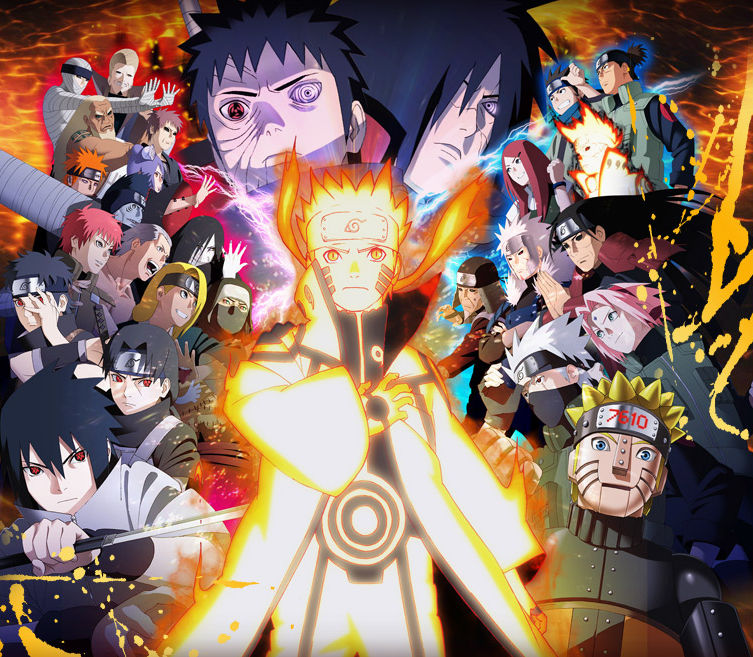

Animes Mais Populares no Mundo
Top 3 Animes Mais Populares no Mundo
Demon Slayer: Kimetsu no Yaiba

Em um Japão feudal assolado por demônios, o jovem Tanjiro Kamado tem sua vida destruída quando sua família é massacrada por uma dessas criaturas e sua única irmã sobrevivente, Nezuko, é transformada em um Oni. Para salvá-la, restaurar sua humanidade e vingar os seus, Tanjiro passa por um treinamento implacável e ingressa na corporação secreta dos Caçadores de Demônios. Ao lado de aliados poderosos como Zenitsu e Inosuke, ele enfrenta batalhas brutais contra as forças das trevas, em uma jornada emocionante que se destaca na indústria contemporânea pela narrativa de laços familiares e pela animação impecável do estúdio ufotable.
O impacto comercial e cultural de Demon Slayer consolidou a obra como um dos maiores fenômenos do entretenimento mundial, quebrando recordes históricos com o faturamento cinematográfico bilionário da franquia nos cinemas — incluindo o sucesso estrondoso da trilogia Castelo Infinito e de Mugen Train — e ultrapassando a marca expressiva de 220 milhões de cópias de mangás vendidas globalmente. Além do sucesso financeiro, a produção acumula aclamação crítica internacional, dominando premiações de prestígio como o Crunchyroll Anime Awards e o norte-americano Saturn Awards de Melhor Longa-Metragem de Animação Internacional.
One Piece

Em um vasto mundo dominado por oceanos e piratas, o jovem Monkey D. Luffy engole acidentalmente uma Fruta do Diabo que lhe dá o poder de esticar como borracha, mas remove sua habilidade de nadar. Determinado a realizar seu grande sonho de infância, ele parte para o mar em busca do lendário "One Piece" — o maior tesouro do mundo deixado pelo antigo Rei dos Piratas —, cujo achado garantirá a Luffy o título de novo Rei. Ao longo de sua jornada na perigosa Grand Line, ele recruta os leais e excêntricos membros dos Piratas do Chapéu de Palha, enfrentando o Governo Mundial, a Marinha e tripulações rivais em uma narrativa épica e duradoura sobre liberdade, amizade e conspirações globais produzida pela Toei Animation.
Com quase três décadas de história, One Piece detém marcas que o consagram como a franquia de mídia mais bem-sucedida do Japão, ostentando o Recorde Mundial do Guinness com mais de 516 milhões de cópias de mangás impressas globalmente, o que o torna a história em quadrinhos escrita por um único autor mais vendida de todos os tempos. O anime já superou a histórica marca de mil episódios transmitidos com enorme audiência global, gerou filmes de sucesso estrondoso nos cinemas mundiais (como One Piece Film: Red) e rompeu a barreira das mídias tradicionais com uma adaptação em live-action produzida pela Netflix que alcançou o topo de visualizações em dezenas de países, provando a imortalidade e o apelo universal da obra de Eiichiro Oda.
Naruto Shippuden

Após dois anos e meio de treinamento intensivo, o jovem ninja Naruto Uzumaki retorna à Vila Oculta da Folha muito mais forte e maduro, focado em seu grande objetivo de se tornar o Hokage, o líder de sua comunidade. No entanto, a paz dura pouco: a Akatsuki, uma perigosa organização clandestina composta por ninjas renegados de elite, inicia uma caçada implacável para capturar as Bestas de Caudas, incluindo a Raposa de Nove Caudas selada dentro de Naruto. Em meio a conspirações políticas e batalhas monumentais, Naruto também luta desesperadamente para resgatar seu melhor amigo e rival, Sasuke Uchiha, que se corrompeu em busca de poder e vingança, conduzindo a história para a brutal e épica Quarta Mundial Ninja produzida pelo estúdio Pierrot.
Como uma das produções mais influentes do século XXI, Naruto Shippuden consolidou-se como um pilar da cultura pop global, impulsionando a franquia original a ultrapassar a marca de 250 milhões de cópias de mangás vendidas em todo o mundo. A série animada quebrou recordes de audiência internacional em plataformas de streaming como a Crunchyroll, onde figura consistentemente entre os animes mais assistidos da história, além de ter sido um dos principais motores de exportação da cultura otaku para o Ocidente. O impacto cultural de sua iconografia é imensurável, tendo gerado uma bilionária indústria de jogos eletrônicos de sucesso, linhas de roupas de grandes marcas e memes globais duradouros — como a famosa "corrida ninja" —, que mantêm o legado da obra de Masashi Kishimoto vivo até hoje.